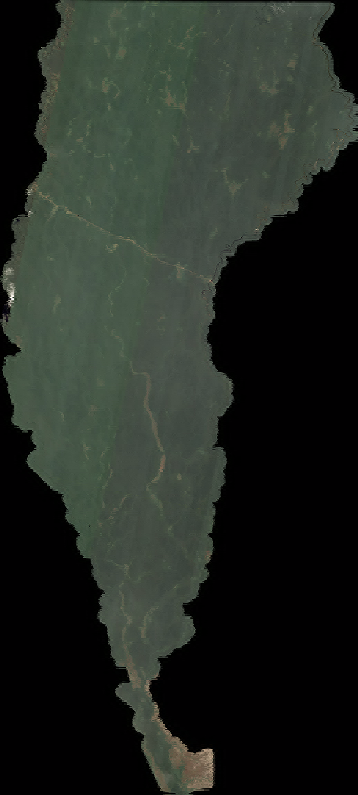

AMAZON TOPOGRAFIA · PORTAL DE DADOS
Acesso aos dados da Gleba Maici
Um ponto de acesso às imagens orbitais, aos produtos processados e à documentação técnica do projeto. Aqui você entende o que foi produzido, consulta os registros de qualidade e encontra os arquivos para seu trabalho.
Imagens de agosto de 2026 · Produtos R02 · Relatório R03

Sobreposição: produto R02 de agosto/2026, INPE, CC BY 4.0. Base de contexto: Esri World Imagery, multitemporal; não integra a entrega de agosto.Prévia do produto R02. Carregando a localização no território.
ENTENDA O PROJETO
Da imagem de satélite
à consulta dos dados.
O portal reúne as etapas do trabalho em uma biblioteca pesquisável. Cada produto tem uma finalidade, e a documentação ajuda a interpretar seu uso.
- 01 / ORIGEM
Imagens do INPE
Cinco cenas CBERS-4A/WPM de agosto de 2026, acompanhadas das bandas e dos metadados que identificam sua origem.
- 02 / PROCESSAMENTO
Produtos para o trabalho
Imagens reunidas e refinadas geometricamente na revisão R02. Há mestres completos e um recorte da gleba com margem de 1 km.
- 03 / ACESSO
Consulta e download
Busque por nome, grupo ou formato. Consulte as prévias, abra o relatório e acesse os arquivos hospedados no Google Drive.
O QUE SERÁ COMPARTILHADO
Cinco grupos.
Um trabalho documentado.
Dos dados originais às versões de uso diário, cada grupo organiza uma parte da entrega. Selecione uma etapa para conhecer seus arquivos.
Imagens originais
Bandas e metadados das cenas de agosto distribuídas pelo INPE.
Mestres R02
Cinco GeoTIFFs de quatro bandas e mosaicos virtuais para trabalhar com o conjunto.
Imagem de trabalho
Recorte com margem de 1 km: ECW em cor natural, GeoTIFFs e arquivos auxiliares.
Controle e checagem
Pontos GNSS, discrepâncias, verificações e registros das avaliações do bloco de agosto.
Relatório técnico R03
Metodologia, resultados, cartas-imagem e orientações de uso em PDF e DOCX.
COMECE PELA SUA NECESSIDADE
Qual arquivo devo usar?
Você pode começar pela imagem de consulta, pelos dados multibanda ou pela documentação. Escolha seu objetivo para ver a indicação.
INDICAÇÃO / ECW EM COR NATURAL
Uma imagem leve para consulta no SIG.
O ECW de aproximadamente 398 MB facilita a visualização da gleba e de seu entorno. Prefira o pacote ZIP, que mantém a imagem e seus auxiliares juntos.
Consultar o pacote da imagemINDICAÇÃO / GEOTIFF MULTIBANDA
Quatro bandas para análises no SIG.
Os mestres completos R02 conservam os valores digitais fundidos, anteriores ao realce de visualização. São a referência para cálculos e análises compatíveis com essa origem.
Consultar os mestres GeoTIFFINDICAÇÃO / RELATÓRIO TÉCNICO R03
Entenda como os produtos foram feitos.
O relatório reúne o processamento, a avaliação posicional, as cartas-imagem e as recomendações. Os registros de controle permitem acompanhar as verificações.
Consultar a documentaçãoREFERÊNCIA E USO
Leia a imagem
com seu contexto.
O mosaico é uma base de apoio à interpretação e ao trabalho cartográfico. Nuvens, sombras e a distribuição dos controles condicionam o que pode ser interpretado.
Conhecer as especificações e limitaçõesSIRGAS 2000 / UTM 20S · EPSG:31980
O pixel de saída de 2 m não significa precisão de 2 m. A conferência de sete pontos apresentou RMS de 1,951 m, com alcance descrito no relatório. Esse resultado não demonstra exatidão absoluta uniforme em toda a gleba.
A consulta é feita no portal; os arquivos são disponibilizados pelo Google Drive. O serviço pode pedir confirmação para baixar arquivos grandes. As prévias servem à apresentação e não substituem os produtos em resolução plena.
Encontre o material para o seu trabalho.
Busque, filtre, consulte e baixe os arquivos da entrega de agosto.